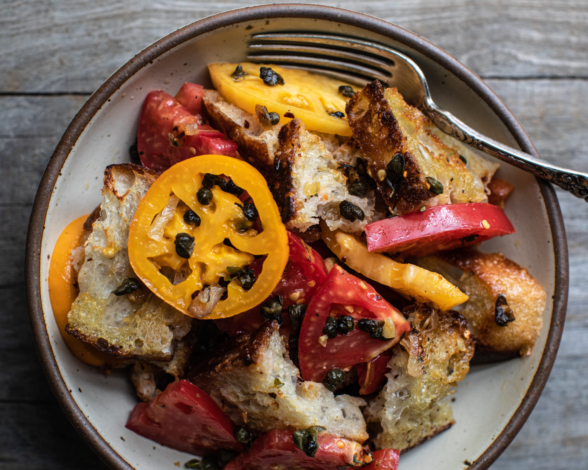

Virginia's Recipe Page Research
Fried Caper Panzanella

A spin on the classic Panzanella with punchy fried capers, a fresh homemade shallot dressing,
sliced and toasted foccacia, and beautiful heirloom tomatoes.
Ingredients
- 3 tablespoons olive oil
- 1/2 cup capers, drained and patted dry
- 7 oz sourdough focaccia bread, thinly sliced into 2-inch pieces, 1/2 inch thick
- 3 heaping tablespoons vegan butter
- 1 large shallot, sliced
- 3 cloves garlic, chopped
- 1 teaspoon crushed red pepper flakes
- 1 tablespoon fresh oregano leaves
- 1 tablespoon fresh thyme leaves
- Fresh cracked black pepper & salt to taste
- 2 pounds heirloom tomatoes, sliced into 2-inch pieces, 1/2 inch thick
Directions
- In a large skillet, add 3 tablespoons of olive oil and bring to medium-high heat. Once hot, throw in the capers and cook for 6-8 minutes, stirring every so often, until crispy. Taste one to make sure they are crispy and then remove from the skillet. Set them aside to garnish at the very end.
- Next, place sliced bread in the same skillet with leftover oil and pan-fry until golden brown on both sides, about 3 minutes on each side. Drizzle in a little bit more oil, if needed. You want the slices to get toasty brown but still remain somewhat chewy on the inside. Once done, add the bread to a beautiful large salad bowl and set aside.
- For the dressing, in a separate small pan, add the butter and bring to medium-high heat. Throw in the shallots, garlic, crushed red pepper flakes, oregano leaves, thyme leaves, and a sprinkling of salt and pepper. Bring to a sizzle and cook for a few minutes until the shallots and garlic are tender and the oregano leaves are crisped and curled. Remove from heat and set aside
- Time to assemble! Add the sliced tomatoes to the large salad bowl with bread and gently toss. Add a few splashes of red wine vinegar (about 1 tablespoon). Using a spoon, spread the dressing over the bread and tomatoes and then pour every last drop out. Gently toss again. Right before serving, sprinkle the fried capers over the top and a bit of flaky salt, to taste. Eat immediately.